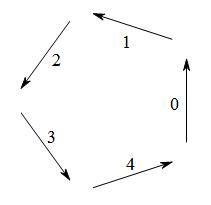
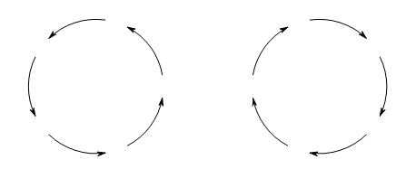

Project Euler 208
题目
Robot Walks
A robot moves in a series of one-fifth circular arcs ($72°$), with a free choice of a clockwise or an anticlockwise arc for each step, but no turning on the spot.
One of $70932$ possible closed paths of $25$ arcs starting northward is

Given that the robot starts facing North, how many journeys of $70$ arcs in length can it take that return it, after the final arc, to its starting position?(Any arc may be traversed multiple times.)
矩阵树定理
此处的矩阵树定理给出如何求有向图中内向树（内向树的基图是一棵树，但是所有子节点都将指向父节点）个数和外向树（外向树的基图也是一棵树，但是所有父节点都将指向子节点）个数。
内向树个数
令$D^{\text{out}}(G)$为有向图$G$出度的矩阵，它是一个对角矩阵，其中元素$d^{\text{out}}_{i,i}(G)$表示节点$i$的出度。
令$A(G)$为有向图$G$的邻接矩阵。
令$Q^{\text{out}}(G)=D^{\text{out}}(G)-A(G)$为图$G$的出度拉普拉斯矩阵。
那么以节点$w$为根的内向树的个数$t_w(G)$为：
其中$M_{i,j}$表示矩阵$Q^{\text{out}}(G)$去掉第$i$行和第$j$列的一个矩阵。
外向树个数
和求内向树个数类似，令$D^{\text{in}}(G)$为有向图$G$入度的矩阵。
令$Q^{\text{in}}(G)=D^{\text{in}}(G)-A(G)$为图$G$的入度拉普拉斯矩阵。
那么以节点$w$为根的外向树的个数$t_w’(G)$为：
其中$M’_{i,j}$表示矩阵$Q^{\text{in}}(G)$去掉第$i$行和第$j$列的一个矩阵。
BEST定理
BEST定理给出了有向欧拉图$G=(V,E)$的不同欧拉回路条数$\text {ec}(G)$为：
其中，
- $t_w(G)$是以$w$为根节点的内向树个数。由于$G$是一个欧拉图，因此对于$w,w’\in V$，都有$t_w(G)=t_{w’}(G)$.$t_w(G)$的值可以通过矩阵树定理求出。
- $\deg(v)$是指节点$v$在这个有向图的出/入度。由于欧拉图中，每个节点出度和入度都是相同的，因此统一用$\deg(v)$表示。
注意定理适用于有重边的图，并且，这些重边将被视为是不一样的。因此如果重边使用的次序不一样，那么两条欧拉回路视为是不相同的。
解决方案
假设$m=70,n=\dfrac{m}{5}=14$，那么答案为
如下图所示，当机器人选择了一个方向走，那么下一步它只能选择当前方向的前一个方向或者是后一个方向走。

我们为每个初始方向标上一个序号，按照题意，当前如果行走的是第$i$个方向，那么下一步只能是第$(i+1)\% 5$或者是第$(i-1)\%5$个方向。
可以发现，当机器人恰好沿着这$5$个方向都走一次时，它才能回到原点。因此，在这$m$个步骤中，每个方向出现的次数都是相等的，都为$n$次。如果$m$不是$5$的倍数，那么机器人没有办法走完其中一个“圈”，最终答案为$0$。
另外，如果这五个方向以逆时针迭代一圈，那就能够下图的左边部分，相当于机器人逆时针走了一个完整的圈；如果以顺时针迭代一圈，那么就能够得到右边部分，相当于机器人顺时针走完了一个圈。因此机器人走完$m$步最终回到原点时，相当于这个机器已经走了逆时针$j$个圈，顺时针$n-j$个圈，其中$0\le j\le n$。

把问题转化为一个图论模型：
一个有向图$G=(V,E)$上分别有$5$个节点，对于每个节点$i$，它只能到达节点$(i+1)\% 5$或者是第$(i-1)\%5$。如果在整个过程中，机器人总共逆时针旋转了$j$圈，顺时针旋转了$n-j$圈。那么就相当于每个节点$i$，有$j$条有向边到达节点$(i+1)\%5$，有$n-j$条边到达节点$(i-1)\%5$.那么问题就相当于转化为求$G$的欧拉回路条数。
有向图$G$的邻接矩阵$A(G)$可以写成如下：
不难写出它的出度拉普拉斯矩阵为：
那么根据BEST定理，将矩阵代入计算，可以得到BEST定理中生成树的个数为$n^4-3jn^3+4j^2n^2-2nj^3+j^4$.
BEST定理中$\text{ec}(G)$中的另外一项，代入$\deg(v)=n$，那么得到$((n-1)!)^5$。但是，在我们这个图上，每一条边视为相同的。因此，需要从$\text{ec}(G)$中除去$(j!)^5\cdot((n-j)!)^5$。不过，机器人一开始可以从某条欧拉回路中的任意一条节点为$0$的出边开始出发，由于节点$0$有$n$条出边，那么需要乘回$n$。因此，另外一项最终系数为$\dfrac{((n-1)!)^5}{(j!)^5\cdot((n-j)!)^5}\cdot n=\dfrac{(C_n^j)^5}{n^4}$。
因此，综合起来，机器人可以行走的步数为：
代码
1 | from tools import get_pascals_triangle |